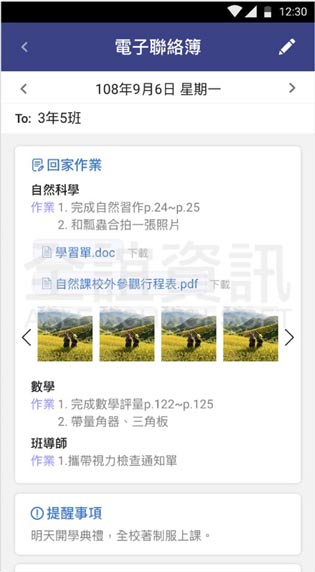
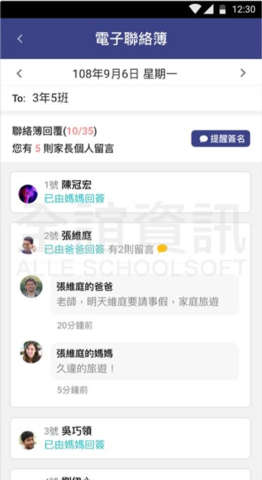

<div class="APP_application_list_class">
  <div class="APP_application_list_title">
    <span class="APP_application_list_title_left">
      <h4>電子聯絡簿</h4>  
    </span>
    <span class="APP_application_list_title_right">
      <span class="APP_list_user APP_user_orange">
        學生
      </span>
      <span class="APP_list_user APP_user_green">
        老師
      </span>
      <span class="APP_list_user APP_user_red">
        家長
      </span>
    </span>
    <div class="clear"></div>
  </div>

  <div class="APP_application_list_words">
    聯絡簿分為科任老師、家長、導師三種身份別使用，
        <span>科任老師：能在電子聯絡簿出作業，還有設定下次上課
                          前一日提醒學生的貼心功能。</span>
        <span>導師：當日透過電子聯絡簿整合所有課堂作業，可在聯
                   絡簿上宣布或公告事項，再進行當日聯絡簿的發
                   佈。</span>
        <span>家長：透過電子聯絡簿，能清楚得知導師發布資訊以及
                   課堂作業內容，推播提醒不怕忘記簽名。</span>
  </div>

  <div class="APP_application_list_pic">
    <span class="APP_list_pic_margin">
      
    </span>
    <span  class="APP_list_pic_margin">
      
    </span>
  </div>
</div>
